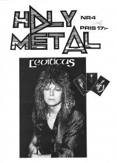

CMnexus
: Contemporary Christian culture, music, and media.
|
LeviticusOn the cover
1988
Holy Metal | Media coverage- 1986 in Metal Madness "Christ & Metal: Leviticus", by Scott Heller
- 1986 in Heaven's Metal "News Item: Leviticus"
- May 1987 in CCM "Messiah Metal", by Devlin Donaldson, Steve Rabey
- 1987 in Heaven's Metal "Leviticus", by Doug Van Pelt
- Apr 1988 in Heaven's Metal "Rockin' With The Levites", by Daniel Nordström
- Jun 1988 in Heaven's Metal "Concert Review: The Best White Metal Show Ever!", by Daniel Nordström
- Jun 1988 in Heaven's Metal "Leviticus In The USA"
- 1988 in Holy Metal "Leviticus"
- Aug 1988 in Heaven's Metal "New Wine From Sweden", by Doug Van Pelt
- 1988 in Zunrise "Sevensk White Metal: Leviticus"
- Nov 1988 in CCM "In Concert: Heartland Music Festival: Larry Norman Returns; Leviticus Debuts", by Doug Van Pelt
- Win 1988 in Harvest Rock Syndicate "Björn Stigsson Sets Fire to Leviticus", by Kevin Allison
- Oct 1989 in Heaven's Metal "Poster: Leviticus"
- Oct 2007 in Heaven's Metal "Where Are They Now?", by Steve Rowe
Albums & reviews:1984: The Strongest Power 1987: Setting Fire to the Earth 1993: The Best Of Leviticus
Books about Leviticus
- "1645 Leviticus" in Headbangers: The Worldwide Mega-Book of Heavy Metal (Mark Hale, 1993).
- "Leviticus" in The Encyclopedia of Contemporary Christian Music (Mark Allan Powell, 2002).
|
|